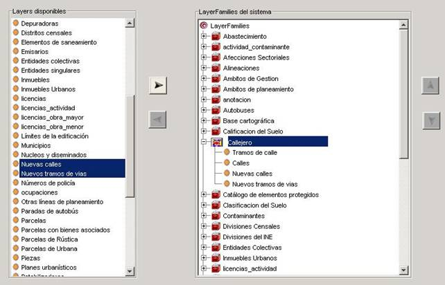

El proceso para añadir capas a una familia de capas es el siguiente:
Seleccionar de la lista de capas aquellas que se quieran añadir a una categoría o familia de capas. Nótese que es posible seleccionar varias manteniendo pulsado el botón Ctrl. y pinchando sobre el nombre de las capas una a una.
En el árbol de Familias de capas del Sistema, seleccionar la categoría o familia a la que se desean añadir las capas.
Pulsar el botón situado entre ambos paneles de selección. De esta manera las nuevas capas se añadirán en las últimas posiciones de la familia seleccionada.

Si se desea añadir las capas en una posición concreta, se seleccionará del árbol de Familias de capas del Sistema la capa tras la cual habrán de insertarse las nuevas capas.
De igual modo, pulsando el botón , las nuevas capas se añadirán tras la indicada.
Una vez finalizado el proceso, pulsando el botón Guardar se almacenarán los cambios realizados, obteniendo un mensaje informativo si la operación se completa correctamente, y un mensaje de error explicativo en caso de encontrar algún problema.